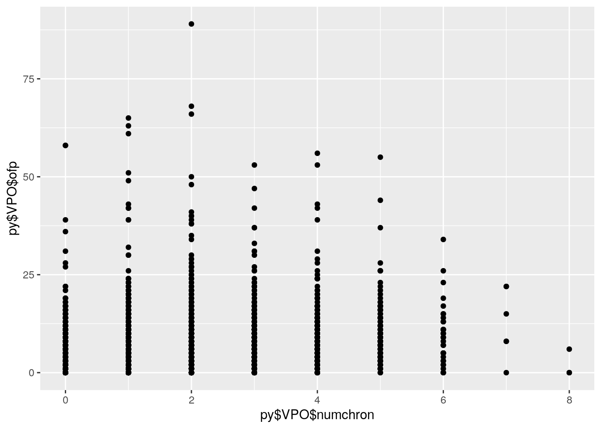

Throughout my semester in Computational Biology and Bioinformatics, I have used R and python to explore, manipulate, and analyze different data. I will be using the dataset "Visits to Physician Office" (VPO) from the item OFP in the Ecdat package. 'ofp' is the number of physician office visits and 'numchron' is the number of chronic conditions of the individual.
library(tidyverse)## ── Attaching packages ─────────────────────────────────────────── tidyverse 1.3.0 ──## ✓ ggplot2 3.3.2 ✓ purrr 0.3.4
## ✓ tibble 3.0.3 ✓ dplyr 1.0.1
## ✓ tidyr 1.1.1 ✓ stringr 1.4.0
## ✓ readr 1.3.1 ✓ forcats 0.5.0## ── Conflicts ────────────────────────────────────────────── tidyverse_conflicts() ──
## x dplyr::filter() masks stats::filter()
## x dplyr::lag() masks stats::lag()VPO <- read.csv("https://vincentarelbundock.github.io/Rdatasets/csv/Ecdat/OFP.csv")import numpy as np
import pandas as pd
VPO = pd.read_csv("OFP.csv")
VPO = VPO[['ofp','numchron']]
print(VPO.head())## ofp numchron
## 0 5 2
## 1 1 2
## 2 13 4
## 3 16 2
## 4 3 2VPO.describe()## ofp numchron
## count 4406.000000 4406.000000
## mean 5.774399 1.541988
## std 6.759225 1.349632
## min 0.000000 0.000000
## 25% 1.000000 1.000000
## 50% 4.000000 1.000000
## 75% 8.000000 2.000000
## max 89.000000 8.000000The average number of physician office visits ('ofp') is 5.7744 visits, and the standard deviation is 6.7592. The average number of chronic conditions ('numchron') is 1.5420 conditions, and the standard deviation is 1.3496. The median values of 'ofp' and 'numchron' are 4.0 and 1.0, respectively.
np.mean(VPO[VPO.numchron<VPO["numchron"].median()].ofp)## 3.3824390243902438The mean of the variable ‘OFP’ when ‘numchron’ is less than the median 'numchron' is 3.3824.
np.mean(VPO[VPO.numchron>VPO["numchron"].median()].ofp)## 7.563462559745088The mean of the variable representing the number of office patient visits (‘OFP’) when the number of chronic conditions ('numchron’) is greater than the median number of chronic conditions is 7.5635. This suggests that patients with more chronic conditions have more visits to their physician’s office on average.
Reticulate allows the use of code across python and R. Basically, it allows them to play! Here is an example of using reticulate:
library(reticulate)import pandas as pd
VPO = pd.read_csv("OFP.csv")library(ggplot2)
ggplot()+geom_point(aes(x=py$VPO$numchron,y=py$VPO$ofp))+geom_count()+scale_size_area() The plot, which accessed the Python-defined objects using py$, shows that the majority of individuals in the "Visits to Physician Office" dataset have less than 2 chronic conditions ('numchron'). The highest number of patient office visits ('ofp') is 88, and the individual has 2 chronic conditions.